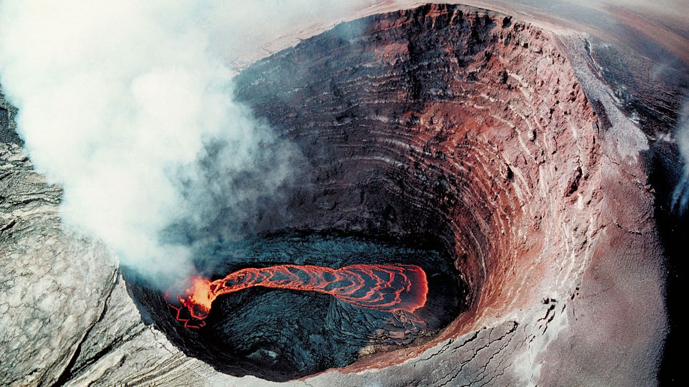
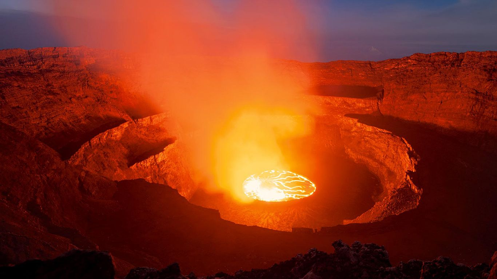

В данном разделе находятся все вулканы этой страны на нашем сайте.
Вулкан Ньямлагира (Nyamuragira)

На территории Национального парка Вирунга в Демократической Республике Конго находится большой щитовой вулкан
Ньямлагира (Nyamuragira), являющийся практически самым активным на африканском континенте.
Раз в несколько лет (примерно один раз в два года) этот природный огнедышащий котел извергает огромные фонтаны
лавы, потоки которой простираются на многие километры. Высота такого фонтана достигает трехсотметровой высоты,
а само извержение продолжается от нескольких дней до нескольких месяцев.
При извержении вулкан выбрасывает в атмосферу огромнейшее количество серы. В 25 км от вулкана находится городок
Гома с населением 600 тысяч жителей, расположенный на одном из Великих Африканских озер – озере Киву. А недалеко
от него находится вулкан Ньирагонго, с которым Ньямлагира сливается в основании..
На высоте свыше 3000 м вулкан увенчан обширной котловиной (кальдерой), ширина которой превышает более 2 км.
Довольно длительное время в жерле вулкана с 1921 по 1938 г.г. существовало озеро кипящей лавы, глубина которого
достигала 60 м. Но впоследствии сильные извержения 1938 – 1940 годов уничтожили его, а потоками лавы была залита
территория 75 кв.км. Тогда изливающиеся лавовые потоки почти достигли озера Киву и спалили на своем пути поселение
и религиозную миссию. Интересно, что только одно извержение было непосредственно в кальдере. В основном очагами
извержений служили либо лавовые равнины вокруг подошвы вулкана, либо пологие склоны гигантского щита вулкана.
На склонах вулкана присутствует большое количество паразитических шлаковых конусов. Хочется отметить, что первое
извержение Ньямлагира наблюдалось в 1865 году, с тех пор вулкан извергался практически непрерывно свыше 35
раз.
Извержения 1912-1913 годов привели к очень большим жертвам, серьезный ущерб городу Гома нанесло извержение
2002 года. При извержении в 1998 году протяженность лавовых потоков достигала 11 км. Одно из последних извержений
этого страшилища произошли в январе 2010 года, когда широкие потоки лавы достигали 25 км к юго-западу от озера
Киву, около 22 км на северо-запад и 35 км на северо-восток. Потоки лавы очень хорошо видны даже из космоса.
Опасность состояла в том, что лава двинулась в национальный парк Вирунга, где на пути располагался район
обитания шимпанзе, находящихся на грани вымирания. Последнее же извержение вулкана вспыхнуло 7 ноября 2011 года.
Это извержение сопровождалось выбросом огненного фонтана на высоту 400 м и стало крупнейшим извержением
Ньямлагира за 100 лет. Власти Конго совместно с сотрудниками национального парка решили открыть доступ к
вулкану. Это своеобразный трек – восхождение к месту извержения вулкана Ньямлагира. Этот новый вид туризма
значительно расширяется благодаря сотрудничеству руководства парка с научными экспертами обсерватории в Гоме и
Европейского Союза. В походе к месту извержений могут участвовать все желающие. Туристам выпадает огромная
возможность наблюдать за разразившимся огненным шоу в специальном палаточном лагере, расположенном в довольно
близкой и безопасной зоне. Особенно захватывающее зрелище открывается ночью и вспышки извержений видны из
города Гома. Кроме того, существуют пешие прогулки для любителей экзотики к извергающемуся вулкану с
посещением самого места извержения. Ведь именно вблизи вулкана можно одновременно насладиться буйством и
очарованием стихии, восхищаясь неописуемой красотой природы.
Лавовое озеро вулкана Ньирагонго (Nyiragongo) достигает ширины 600 метров. Вулкан расположен в демократической
республике Конго, в днище центральноафриканского гигантского разлома земной коры. Здесь находится область
вулканической активности Вирунга, которая протянулась на сто километров и где поднимается 8 вулканических конусов,
самым активным из которых является Ньирагонго. Недалеко от вулкана расположен город Гома, сам вулкан занимает
площадь в 350 квадратных километров. У жителей близлежащего города одной из главных проблем является излияние
огромного озера лавы расположенного на вершине Ньирагонго. Излияние лавы наблюдались дважды и вызывали
многочисленные жертвы.
Многочисленные выходы газа наблюдаются у вулкана, кроме того они даже есть в городе Гома расположенном в 18
километрах от Ньирагонго.
Высота 2761 метров это самое опасное место Ньирагонго, на 40 метров выше от этой отметки внутри конуса плещется
лавовое озеро, которое скрыто стенками вулкана, и если здесь появится тоннель, то лава потечет вниз по склону.
На этой отметке начинается желоб, протяженностью 15 километров который ведет прямо к городу Гома. По всей длине
гигантского желоба, на склоне из земли били фонтаны раскаленной лавы, некоторые поднимались вверх на 200 – 300
метров. Во время извержения 1977 года вылилось около 100 миллионов кубометров лавы. Целые холмы исчезли в этом
разломе, раньше ученым никогда не удавалось наблюдать такое, как появление целой системы трещин и разломов за
считанные часы.

Лавовое озеро окружено водяными парами, двуокисью углерода, сероводорода, диоксиды серы. Лавовое озеро здесь
было не всегда, Ньирагонго стратовулкан, следовательно, он образовался в результате серии взрывов и сейчас он
характеризуется периодическими взрывными извержениями. Вулкан состоит из слоев лавы и вулканического пепла,
взрыв положил начало его образованию в момент открытия рифта. Предположительно озеро существует с 1927 года,
но скорее всего оно намного старше. Задолго до этой даты появились свидетельства о багровых отблесках на западной
оконечности цепи Вирунга, но никаких письменных свидетельств об этом не сохранилось.
Ньирагонго ученые изучают около 50 лет, первым его осмотрел протестантский миссионер в 1935 году. В 1977 году
произошло сильное извержение, лава из озера вылилась на склоны вулкана. Лава в том же году достигла такого
бъема, что стенки кратера уже не могли ее удержать, и он треснул, магма вытекла наружу. Достаточно было
тектонического толчка, чтобы лава раскачалась и разрушила стенки кратера. Объем лавы в озере составлял 22
миллиона кубометров, и весь этот объем выплеснулся наружу менее чем через один час. Потоки лавы устремились в
Гому со скоростью 70 километров в час.
Вулкан Ньирагонго расположен на линии разлома образованного смещением тектонических плит. Континентальная
вулканическая деятельность вызвана появлением разрывов в земной коре из-за подъемов магмы или сдвига двух
тектонических плит. По мере того как плиты разъезжаются, появляются разломы вдоль которых идет повышение уровня
магмы и формирования вулканов. За последние 40 000 лет здесь происходили значительные извержения вулканов, но
эти извержения еще не закончились, и будут продолжаться.
Если произойдет извержение, население будет эвакуировано на запад от Гомы, на достаточное расстояние от
вулканической равнины Ньирагонго. Ньирагонго означает – долина алеющего огня. В радиусе 50 километров от
Ньирагонго все полыхает красным заревом. Время от времени над лавовым озером вспыхивает пламя – это горят
газы.


 Вулкан Ньямлагира на Гугл карте
Вулкан Ньямлагира на Гугл карте